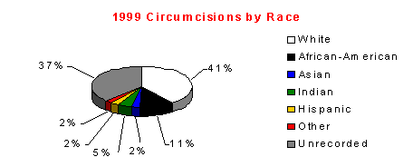

Normal versus Circumcised: U.S. Neonatal Male Genital Ratio
by Dan Bollinger, © 2000
Interest in the genital integrity issue continues to grow and trustworthy statistics are necessary for an informed debate. No United States health agency publishes the annual percentage rates that neonatal males are circumcised versus left intact. The American Academy of Pediatrics complains that statistics being cited are outdated and inaccurate. 1 No extensive compilations have been published since 1979.2 The goal of this paper is to provide additional, recent, and accurate statistics for that discussion. This white paper addresses United States neonatal male circumcisions performed in hospitals.
Year
Circumcisions
% Change
Live Births
Male Births
% Intact
% Circumcised
1999
1,191,733
-1.1%
1998
1,204,431
+5.0%
N/A
2,106,205
42.8%
57.2%
1997
1,146,839
-12.9%
3,880,894
1,985,077
42.2%
57.8%
1996
1,317,422
+9.5%
3,891,494
1,990,499
33.8%
66.2%
1995
1,203,223
-3.0%
3,899,589
1,994,640
39.7%
60.3%
1994
1,240,572
-1.3%
3,952,767
2,021,840
38.6%
61.4%
1993
1,257,461
-5.8%
4,000,240
2,046,123
38.5%
61.5%
1992
1,334,742
+0.9%
4,065,014
2,079,255
35.8%
64.2%
1991
1,323,189
-2.6%
4,110,907
2,102,729
37.1%
62.9%
1990
1,358,218
N/A
4,158,212
2,126,925
36.1%
63.9%
See last paragraph for source data and chart explanation
The circumcision rate for 1998 is 57.2% with a corresponding intact rate of 42.8%.3 The last time the circumcision rate was this low was around 1934,4 64 years ago. In 1979 an estimated 15% of boys retained their normal penis,5 compared with the 42.8% intact rate for 1998.The intact rate has increased 285%, or almost three-fold, during that twenty-year period. The number of circumcisions for 1999 dropped 1.1% from the previous year.
The only historical compilation of circumcision rates is Edward Wallerstein's Circumcision: An American Health Fallacy. 6 His statistics are estimates for the years 1870 (the year circumcision was introduced to the United States7) through 1979. The lowest intact rate was 15% in 1979 when popularity of circumcision reached a record high in the United States. Overall, the intact rate has been increasing. In the United Kingdom, where non-therapeutic circumcisions rarely occur, the circumcision rate is 0.41% for one-year-olds.
Neonatal circumcisions account for 99.3% of U.S. circumcisions. Circumcision in the neonatal period is contraindicated.9 The American Academy of Pediatricians concluded: ``There is no absolute medical indication for routine circumcision of the newborn.'' [10]
Mean neonatal health-care charges during a hospital stay that included circumcision increased 162% from $1154 (1992) to $1869 (1999). In 1999 commercial insurance paid for 63.9% of charges; Medicaid paid for 25.9%; other sources paid for 10.2%. Total charges for 1999 were $2.1 billion ($2,107,226,478).
Deaths occur from the surgery and related procedures; i.e. anesthesia complications during surgery. Although the number of circumcisions has decreased, infant deaths have increased. Eighteen infants died in 1990 versus 51 in 1999. The death rate for infant males who died during the same hospital stay in which they were circumcised increased 283%, or almost three-fold, between 1990 and 1999. 11
Hospital circumcisions account for an estimated 99% of U.S. circumcisions.
The number of circumcisions vary by region. Over the past ten years numbers in the West, Northwest and North Central regions have dropped while the numbers in the South region have risen. Circumcision numbers fluctuates year-to-year for all regions.

Racial make-up of patients apparently changed over the past ten years. White rates are down ~17%. African-American rates are down ~3%. Asian rates are up ~350%. Indian rates are up ~800% and Hispanic rates are up ~260%. [12]
Source Data: According to the U.S. Census Bureau the most accurate figures for live births is the National Center for Health Statistics (NCHS).13 Live births for 1990-1998 are from the NCHS report Births: Final Data for 1998. 14 Births: Final Data for 1999 won't be released until spring, 2001 explaining shaded, blank areas of graph. The NCHS tracks the sex ratio, in recent years it has been 1047 males for every 1000 females born live, or 51.15%.15 This figure has change little in the past 50 years and is used to calculate male births for all years. All other statistics are from health care analysts HCIA-Sachs who compiled for this report an Inpatient View report on annual male16 neonate17 circumcisions18 performed in hospitals between 1990 and 1999. They are 33% samplings. Hospital circumcisions account for an estimated 99% of neonate circumcisions performed. 19
Dan Bollinger is an independent men's studies researcher and instructor for men's workshops. He resides in West Lafayette, Indiana.
Revised January 20th, 2001
- Circumcision Policy Statement (RE9850), Pediatrics. Volume 103, Number 3, March 1999, pp. 686-693, see Epidemiology
- Edward Wallerstein, Circumcision: An American Health Fallacy, Springer Publ., New York, 1980 see appendix `B'.
- The most recent year final data is available.
- ibid, interpolated from data in Appendix `B'.
- ibid.
- ibid.
- David Gollaher, Circumcision: A History of the World's Most Controversial Surgery, Basic Books, New York, 2000, Chapter 4
- British Department of Health and Social Security 1972 National Census, from records of 400,000 males under the age of one year old the circumcision frequency rate was 0.41%.
- Committee on Fetus and Newborn: Standards and Recommendations for Hospital Care of Newborn Infants. Sixth Edition. American Academy of Pediatrics; Evanston, IL 60204, 1978:p. 66-7
- Thompson HC, King LR, Knox E, et al. Report of the ad hoc task force on circumcision, Pediatrics, Vol. 56 No. 4: Pages 610-611, October 1975.
- The reader is cautioned using this data: The deaths reported here include circumcision-related deaths plus deaths from other causes during the same hospital stay and not related to circumcision.
- Note: These rates are derived from data, but may not represent accurate results since the percentage of Unrecorded patient's race is such a large portion of the whole.
- United States Census Bureau. Birth Data .
- Births: Final Data for 1998, NCHS; for 1998 male births see Sex Ratio, p.8; for 1990-1997 live births see Table 1, p. 24.
- Births: Final Data for 1998, NCHS; see Sex Ratio, p. 8
- HCIA reported 8 female circumcisions performed as a secondary procedure in 1991, but none elsewhere in the 1990-99 findings.
- Less than 28 days old.
- ICD-9 64.0 Circumcision.
- HCIA Inc. Circumcision of American Babies Declines 11 Percent in Just Five Years. 13 May 1999.
http://www.cirp.org/library/statistics/bollinger3/